Kitchen Sink v2 · 40 mockups
Round 11 (2026-11-03). Every frame starts from the round-4 grey blockout, used as the layout only: the camera and where everything stands come from the 500 m cell, so the frames agree with each other. The look is the polished one you asked for (ruling 19ab): no size labels, no grid floors, no placeholder blocks. The Training Vault frames are original (it has no real blockout yet). The map views and the Titan's arena change with blockout round 5 (the Titan moves behind a boss portal; the gauntlet grows). Tap a frame to see it big.
The west: town and toys

Just inside the East Gate: the quest board and its three tier givers, the 22 m obelisk, Main Street beyond.
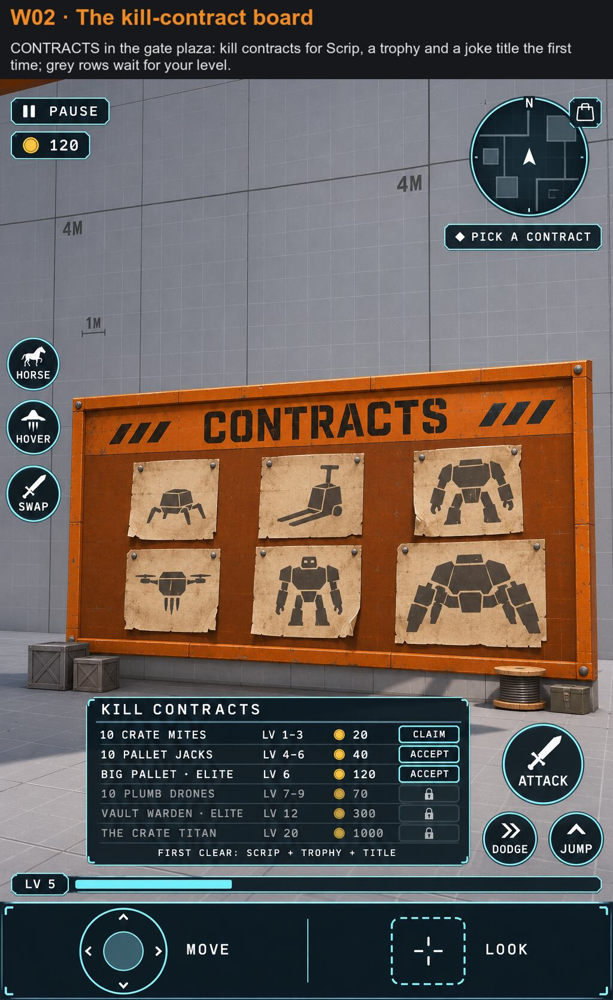
CONTRACTS in the gate plaza: kill contracts for Scrip, a trophy and a joke title the first time; grey rows wait for your level.
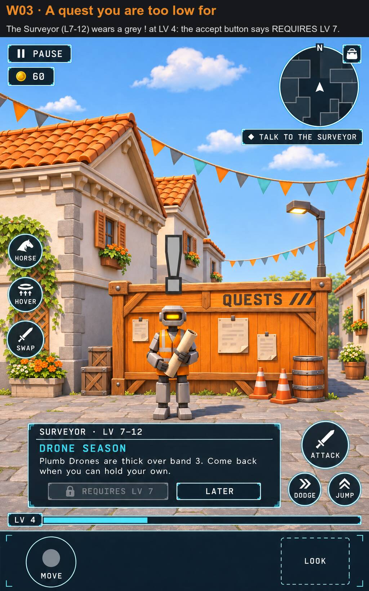
The Surveyor (L7-12) wears a grey ! at LV 4: the accept button says REQUIRES LV 7.

Main Street: one-off upgrades for Scrip and parts, locked by level; BENCH makes ammo. No potions, no heals.
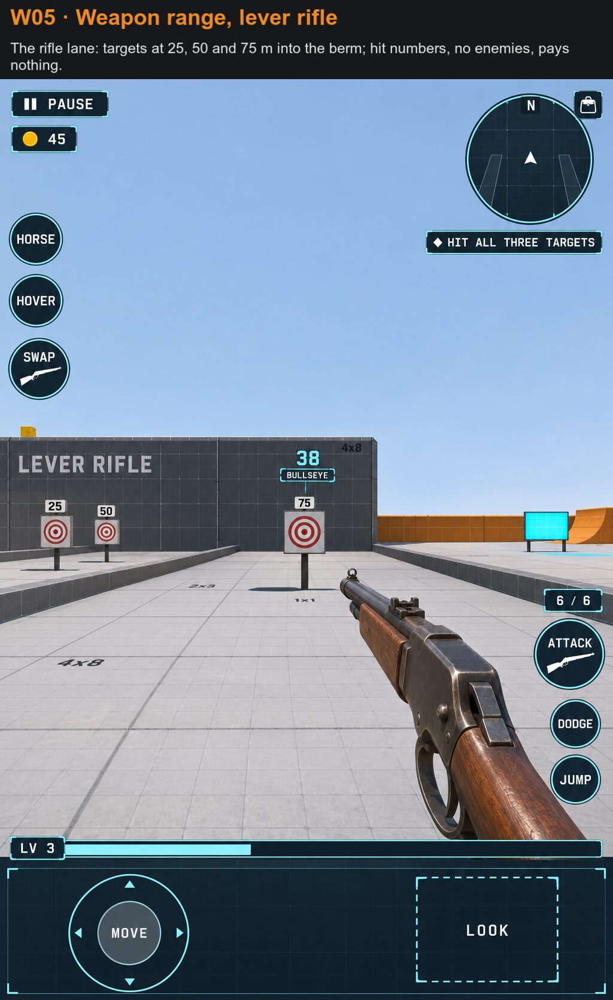
The rifle lane: targets at 25, 50 and 75 m into the berm; hit numbers, no enemies, pays nothing.

The crossbow ammo lane: plank (iron), straw bale (pitch sets it alight), soft dummy (broadhead) at 20 m.

On the board in the middle run-up lane: three kickers (1.6, 2.4, 3.2 m), the 45 m halfpipe beyond, a running trick score.

Hook 5, top of the 45 m tower: the 99 m zipline runs back over the town wall to the finish on the zip-house roof.

Six numbered stations rising east to west: conveyors, jump pads, sliders over the pit, the spinner, the lift, the top deck.

On the loaner horse from the stable hand: the start/finish gantry with the lap timer, rings down the straight. Course only.
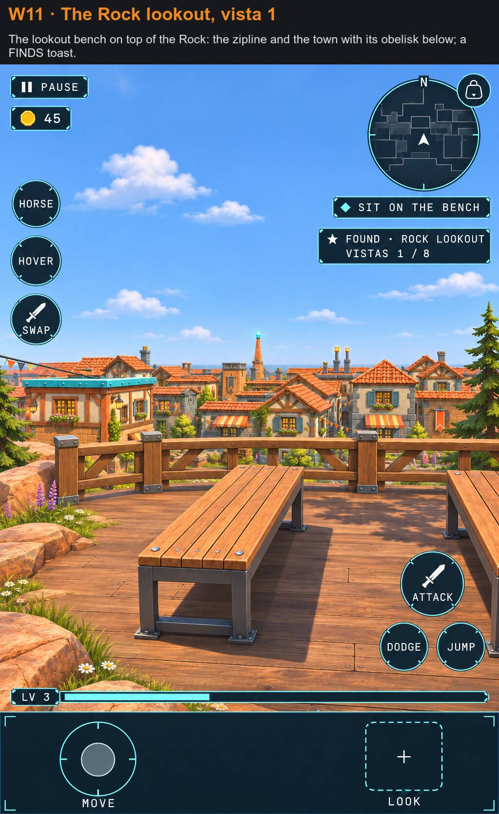
The lookout bench on top of the Rock: the zipline and the town with its obelisk below; a FINDS toast.
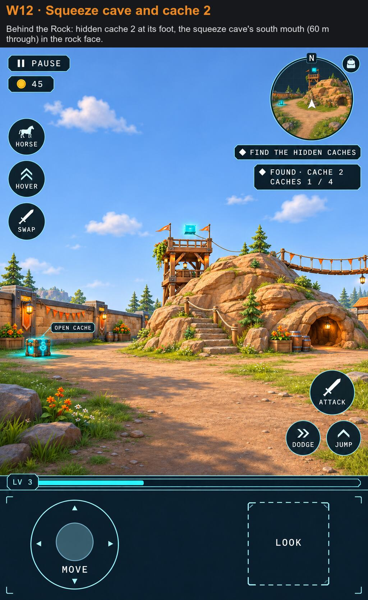
Behind the Rock: hidden cache 2 at its foot, the squeeze cave's south mouth (60 m through) in the rock face.
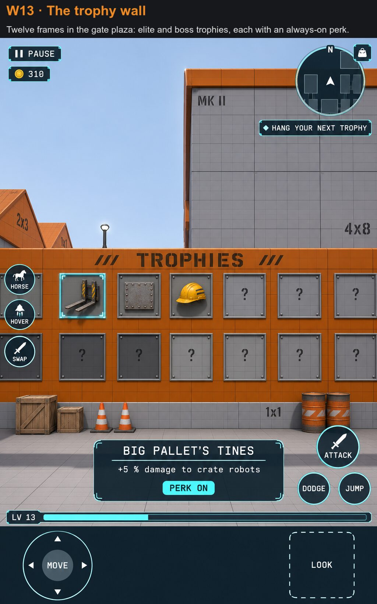
Twelve frames in the gate plaza: elite and boss trophies, each with an always-on perk.
The east: bands, elites, the vault, the Titan

Through the band 1 road gate: a Crate Mite pack (Lv 1) at its dock among crate-stack cover; the band 2 arch beyond.
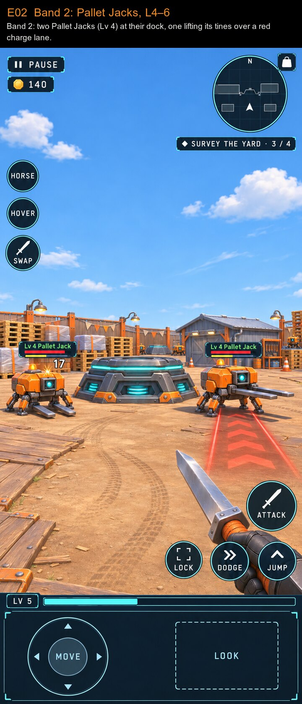
Band 2: two Pallet Jacks (Lv 4) at their dock, one lifting its tines over a red charge lane.
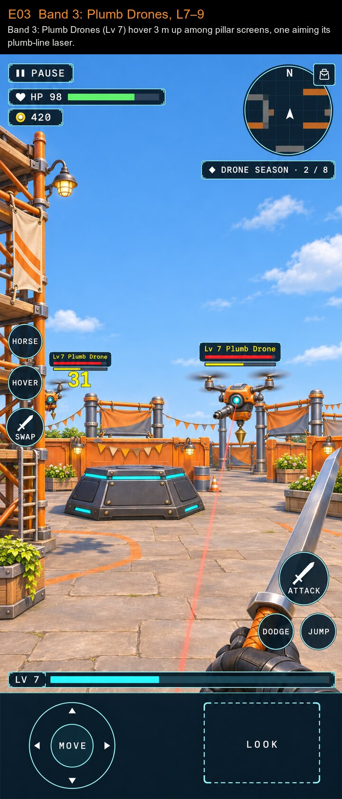
Band 3: Plumb Drones (Lv 7) hover 3 m up among pillar screens, one aiming its plumb-line laser.
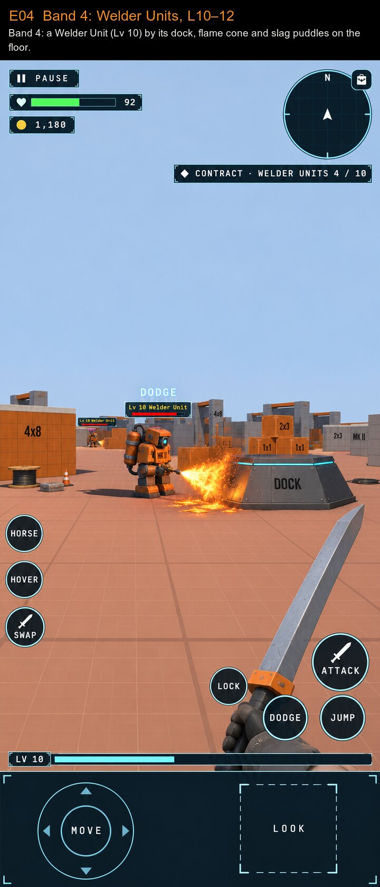
Band 4: a Welder Unit (Lv 10) by its dock, flame cone and slag puddles on the floor.
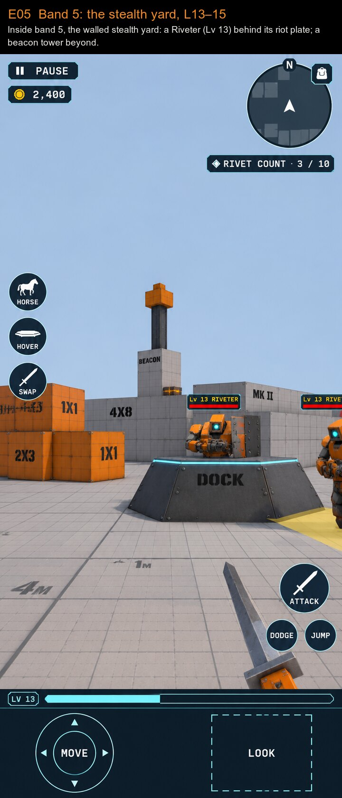
Inside band 5, the walled stealth yard: a Riveter (Lv 13) behind its riot plate; a beacon tower beyond.
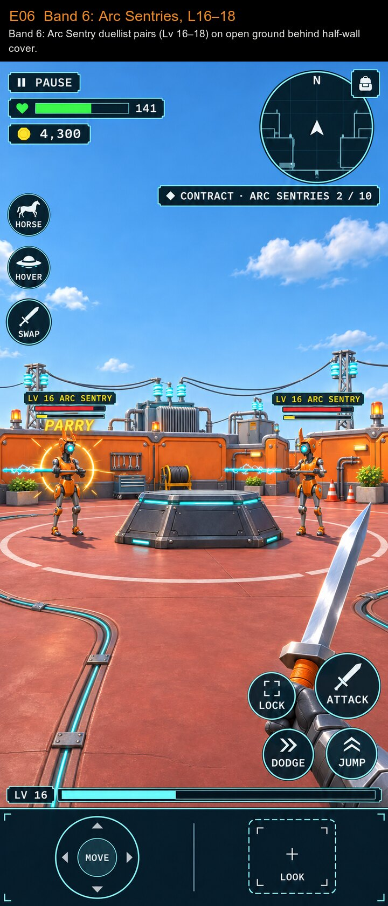
Band 6: Arc Sentry duellist pairs (Lv 16–18) on open ground behind half-wall cover.

Band 2's gate elite in its pit at the exit to band 3: Big Pallet (Lv 6) charges and throws crates.

Band 4's vault gatehouse: the walk-in portal and its plate, "4 ROOMS · ELITE · ~10 MIN".

Room 4 of the Training Vault, under band 4: the Vault Warden (Lv 12), a walking vault door.

Crouched in the stealth yard by the keycard shed: a patrol lamp cone on the floor, beacon tower 3 beyond.

The elite gauntlet (Lv 16–18), wave 3 of 5: Riveters and Arc Sentries inside the stepped walls.
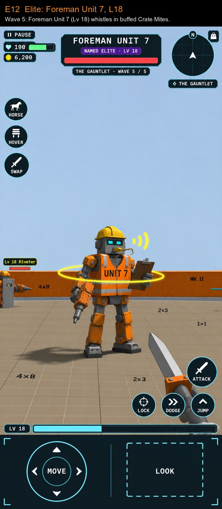
Wave 5: Foreman Unit 7 (Lv 18) whistles in buffed Crate Mites.

In-engine intro at the arena gate: HUD hidden, letterbox, the title card.

The Crate Titan (Lv 20) on the r 28 m floor: slam rings, crate rain, the boss bar.
Systems: levels, storm, cards
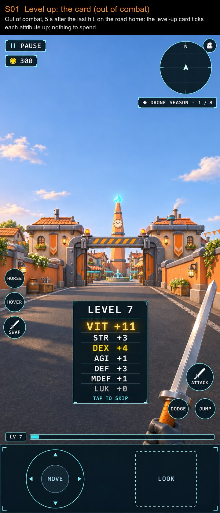
Out of combat, 5 s after the last hit, on the road home: the level-up card ticks each attribute up; nothing to spend.

In combat the level-up is a beat: a ring burst, the LV chip flips 6 to 7, full HP, "LEVEL 7 · +11 VIT" by the XP bar.

Lights Out: the cell in an evening storm; beacon 1 on the stealth yard corner just lit, 1 / 4.
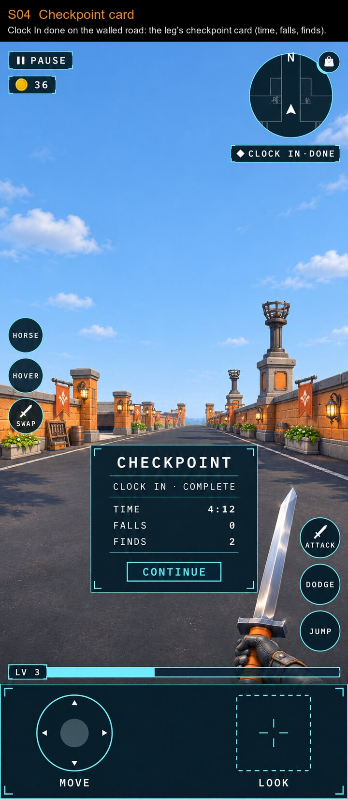
Clock In done on the walled road: the leg's checkpoint card (time, falls, finds).
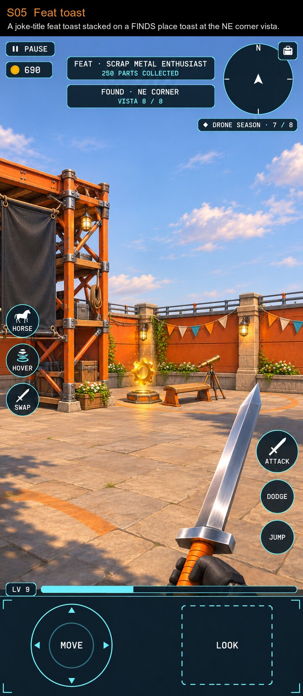
A joke-title feat toast stacked on a FINDS place toast at the NE corner vista.

After the Crate Titan: the shard-complete card with the Titan Cleaver.
The map
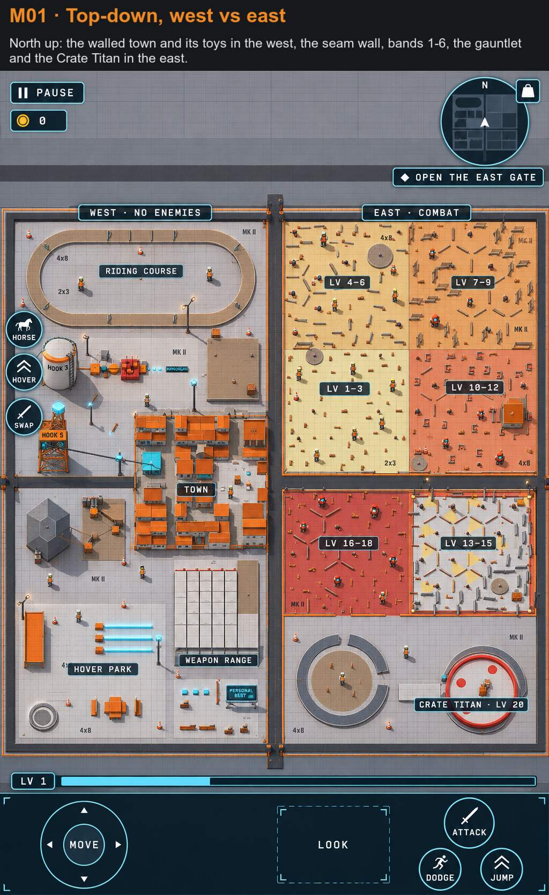
North up: the walled town and its toys in the west, the seam wall, bands 1-6, the gauntlet and the Crate Titan in the east.
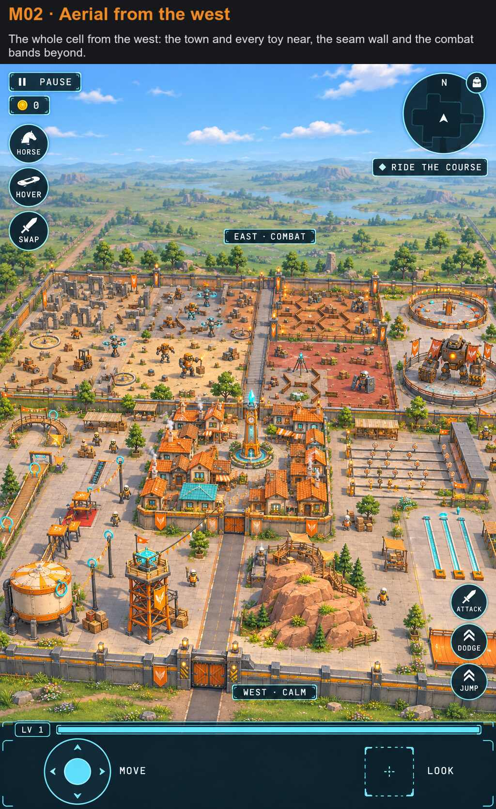
The whole cell from the west: the town and every toy near, the seam wall and the combat bands beyond.

The whole cell from the east: the bands, the stealth yard, the gauntlet and the Titan's amphitheatre near, the town far.
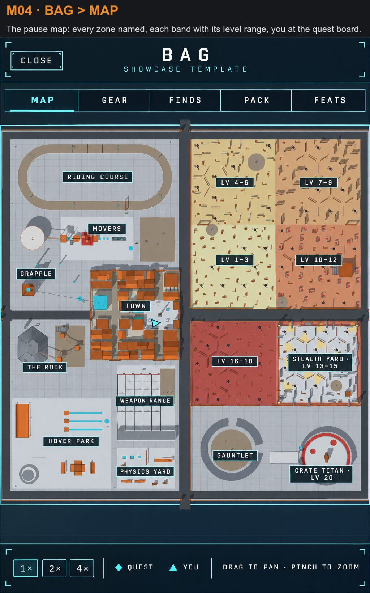
The pause map: every zone named, each band with its level range, you at the quest board.
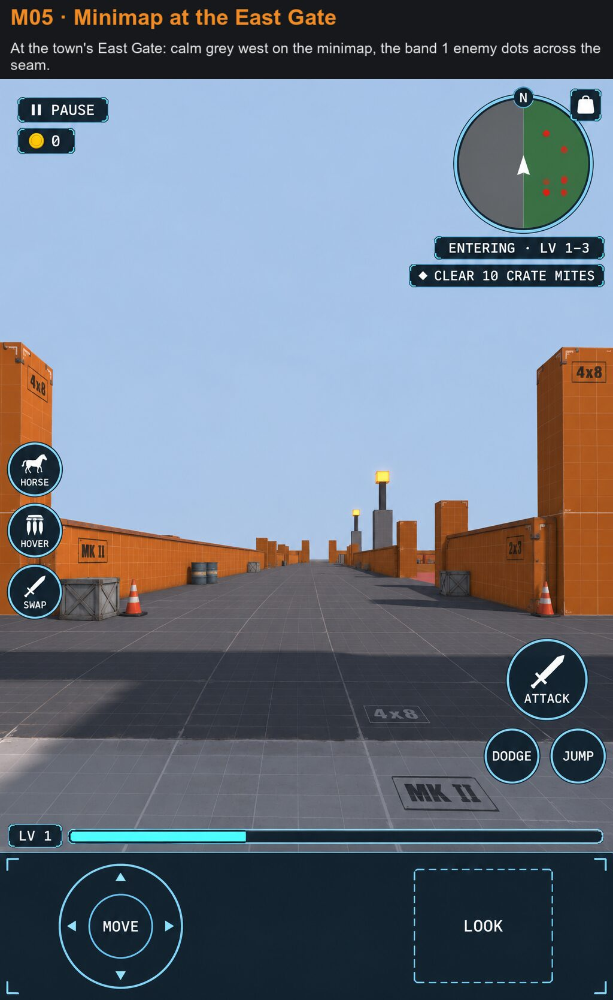
At the town's East Gate: calm grey west on the minimap, the band 1 enemy dots across the seam.
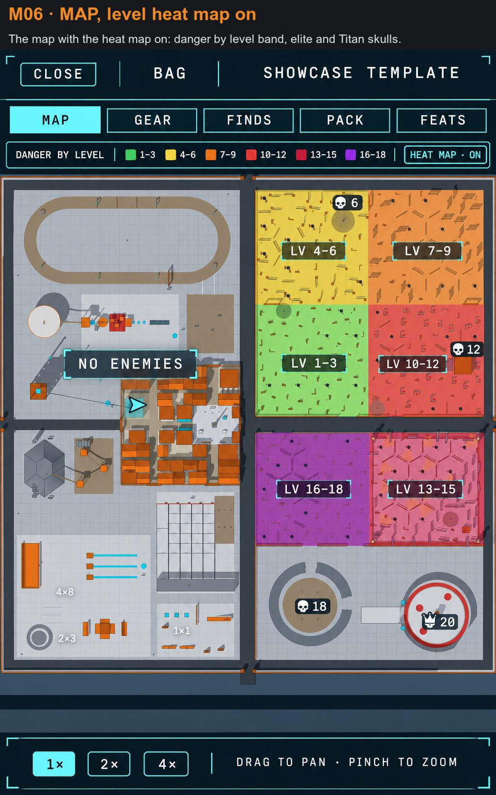
The map with the heat map on: danger by level band, elite and Titan skulls.

The only way into combat: the town's East Gate, and the seam gate across the avenue beyond it.